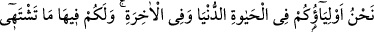

kendisine “korkma, üzülme sana vaad edilen cennetle müjdelen, elbette sen bu gün
hiç benzeri görülmemiş birtakım olaylar göreceksin, sakın korkmayasın çünkü bu
olaylar senin dışında cereyân edecektir” derler. Mutlu olunuz, çünkü sevinmek mutlu
olmaktır.
et-Te’vîlâtü’n-Necmiyye’de şöyle der: Ey Allah’ın has kulları! Allah dostları! Vuslat
cennetiyle müjdelenin. Artık söz gerçekleşti; vaad ve tehdid yok, artık vuslat bayramı
var. Allah Teâlâ genel olarak müminleri sevap ve cennetle ödüllendirmiş has kullarına
güzel bir vuslat dönüşü takdir etmiş, en zirve noktada mümtaz şahsiyetlere ise vuslat
bayramını ebedi hayat sermayesi olarak takdim etmiştir. Burada peşin olan cennet zevk
ve huzur hâlidir.
Bu hususta şöyle denilmiştir: Velâyet ve dostluktan azledilmek gibi bir endişe
duymayın, daha baştan Allah’ın yardım ve inâyetine mazhar olmakla müjdelenin,
korkmayın. Çünkü siz zaten dünyada korkanlardan idiniz. Üzülmeyin; çünkü siz
âriflerden idiniz. Cennetle müjdelenin! Çalışanların ecir ve ödülleri ne güzeldir!
Yarın âhirette şerîatlere âid her şeye nesh kalemi çekilir, namaz, oruç, hac, cihad
ortadan kalkar ve nesh edilir. Fakat muhabbet akdi ve mârifet ahdi asla nesh edilemez.
Cennette geçirdiğin her bir günde Hak Subhânehu ve Teâlâ’yı tanıma, bilme konusunda
daha önce olmayan yeni bir âlemi sana açarlar. Bu sonu olmayan bir iştir ki zâten bu iş
sakın sona ermesin!
Ben var oldukça sanatım ve işim budur.
Rahatım, huzûrum ve dert ortağım budur.
Günüm budur, zamanım budur.
Aradığım avım da şikârım da budur.
Baklî şöyle der: Hayret! İstikamet üzere Allah ile beraber, O’nun müşâhedesinde ve
cemalini idrak içinde olan bir Allah dostunu melekler nasıl müjdeleyebilir! Sevenle
sevgili arasında meleğin feleğin işi ne! Hakkın müjdesinden öte müjde yoktur. Hak
dostları o müjdeyi meleklerden önce almışlarıdır. Zîrâ Yûnus sûresi 62. âyette “Bilin
ki Allah dostlarına korku ve üzüntü yoktur” buyrulmaktadır. Artık Allah dostları için
bir firkat, hasret yahut hicâb hüznü yoktur. Onlar hep yüce Mevlâ’nın cemâlini
seyretmenin zevk sefâsı içindedirler.
Burada meleklerin onları müjdelemesi sadece bir iltifat ve teşrîfâttan ibarettir.
Hakîkatte melekler onları müjdelemekle bu durumdan faydalanmış olurlar. Zîrâ
melekler mârifet nisbetinde esasen bizim dostlarımız ve hizmetçilerimizdir. Meleklerin
babamız Âdem (a.s.)’a secde ettikleri düşünülürse durum daha iyi anlaşılır.